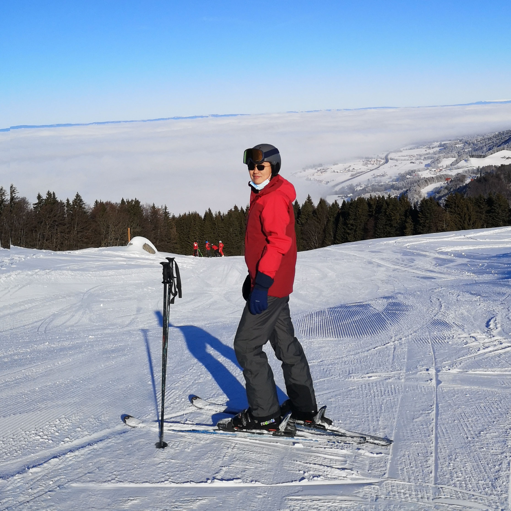

Scientist at MaxWell Biosystems | PhD in Neuroscience
I am a scientist passionate about AI and neuroscience. Currently I am pursuing a Master's degree in Computer Science at Georgia Tech, with a focus on artificial intelligence. I received my PhD in neuroscience from École Polytechnique Fédérale de Lausanne (EPFL), where my thesis focused on understanding dopamine dynamics in reward-based learning.
In my free time I enjoy hiking in the Alps, skiing, and photography.
Studied the neural mechanisms of chronic pain and its relief, using miniscope, fiber photometry, patch clamp and other techniques, with a focus on the ACC-PAG circuitry.
Investigated the neural mechanisms underlying the individual differences in reward-based learning tasks, focusing on dopamine dynamics.
Investigated the temporal requirements for fear conditioning association.
Established a platform for synchronized recording of central neural activities and peripheral functions.
A mobile application for sound classification and alerting. Yamnet is deployed on Android device to classify sound and alert user when a specific sound is detected. Built with Android Studio, Tensorflow, Java, and Python.
A 3D Haunted Mansion video game built with Unity and C#. Players navigate trapped rooms and solve puzzles to unlock doors and escape from ghosts.